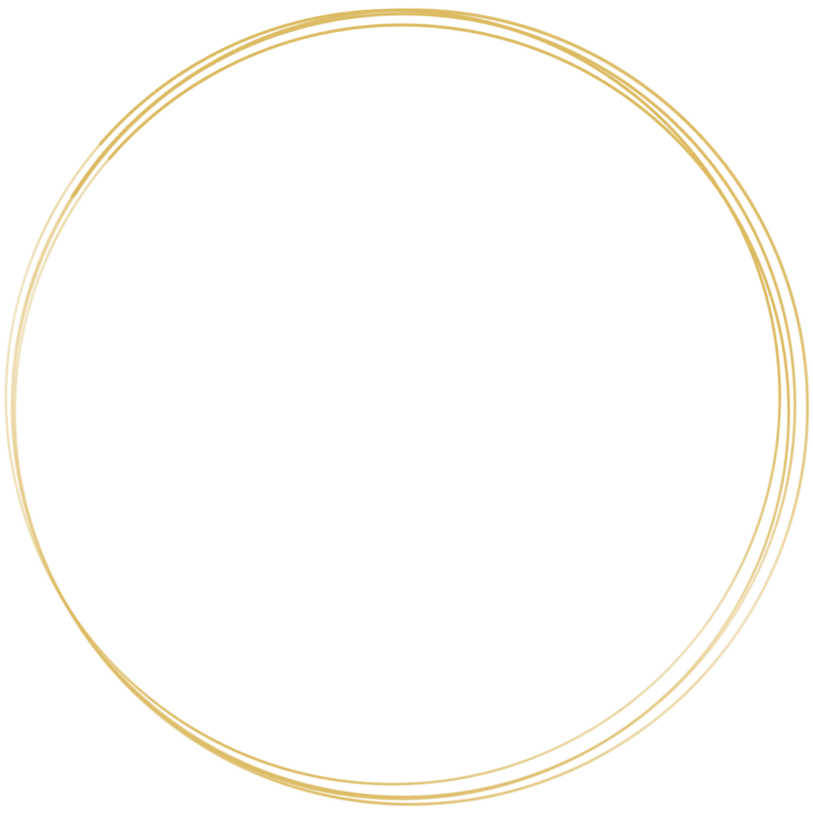

Sportovní a rekondiční masáž


Je využívána pro svou schopnost uvolnit svalové napětí u přetížených nebo ochablých svalů. Disponuje spoustou benefitů, které se promítají nejenom do fyzického těla a jeho organismu, ale také působí pozitivně na psychiku...
Více
Relaxační masáž s prvky Lomi Lomi
Základem jsou citlivé a jemné masážní tahy s prvky havajské masáže. Dochází při ní k lokálnímu uvolnění svalů, jejich regeneraci, ale hlavně k odpočinku. Cílem je odplavení stresu a napětí...
Více
Těhotenská masáž
Velmi jemná a úlevná masáž. Je vhodná pro všechny nastávající maminky, které trápí klasické těhotenské neduhy, jako je otok a bolest nohou, bolest beder, napětí šíje a trapézů...
Více
Breussova masáž
Jedná se o jemnou, citlivou energetickou masáž zad a páteře, která uvolňuje tělesné, psychické i duševní blokády. Je charakteristická tím, že významným způsobem regeneruje a vyživuje meziobratlové ploténky za použití třezalkového oleje...
Více
Proč základní masáž trvá 60 minut namísto běžných 45? Je to proto, že díky času navíc se mohu věnovat i místům, která vás zrovna trápí. Nejčastěji to bývají zatuhlé trapézy a mezilopatkové svaly. Mám tak čas odblokovat trigger pointy, které bolest způsobují, a nebo kvalitněji uvolnit svaly, které jsou přetížené. Prioritou pro mě je individuální přístup, který zkrátka potřebuje svůj čas.
Velmi si vážím přízně stálých zákazníků, proto jako poděkování za věrnost nabízím každou 10. masáž zdarma (nelze kombinovat s permanentkou).
Zavřít
Sportovní a rekondiční masáž
Je využívána pro svou schopnost uvolnit svalové napětí u přetížených nebo ochablých svalů. Disponuje spoustou benefitů, které se promítají nejenom do fyzického těla a jeho organismu, ale také působí pozitivně na psychiku. Svaly zad a šíje velmi trpí na zatuhnutí způsobené stresem a pocity strachu či úzkosti. Jiné bolesti a pocity ztuhlosti pak mohou vzniknout důsledkem špatných pohybových návyků nebo nedostatkem zdravého pohybu. Právě masáž nám pomůže k uvolnění a prokrvení svalů, které nabydou svou původní pružnost a zmírní tím jejich bolest. Sledem masážních hmatů dosáhneme v organismu určité odezvy a léčebného účinku a to nejenom v místě působení, ale i na vzdálených místech nebo dokonce v celém organismu.
Velmi důležitý význam masáže je i v prevenci. Udržuje tělesnou kondici, elasticitu a celkový vzhled kůže a účinně bojuje proti fyzické a psychické únavě. Pomáhá při regeneraci pohybového ústrojí po úrazech, operacích, nemocích či po vysoké fyzické námaze. Podporuje cirkulaci krve a urychluje činnost lymfatického systému, tím pomáhá nastartovat a posilovat imunitu. Masáž také rozšiřuje kapiláry, tím dochází nejen ke zvýšení přísunu kyslíku, živin a imunoglobulinu, ale také k odplavování odpadních produktů metabolismu.
Masáž šíje a zad:
800/1150 Kč za 60/90 minut
Masáž šíje, zad a dolních končetin:
1150 Kč za 90 minut
Celotělová masáž:
1500 Kč za 120 minut
Chci se objednat
Zavřít
Těhotenská masáž
Velmi jemná a úlevná masáž. Je vhodná pro všechny nastávající maminky, které trápí klasické těhotenské neduhy, jako je otok a bolest nohou, bolest beder, napětí šíje a trapézů. Jemnými hmaty masáž zmírňuje tyto projevy, ale má i blahodárný vliv na povzbuzení krevního oběhu, na úpravu tlaku a tepu a uklidňuje maminku i miminko. Pravidelnou masáží docílíme lepší připravenosti na porod. Masáž provádím v poloze na boku, kdy je žena vypodložena tak, aby nedocházelo k tlaku těla na bříško. Nastávající maminka si vybere esenciální olej podle nastavení, nálady, ale i podle aktuálních potřeb. Masírovat lze od 14. týdne těhotenství a to z důvodu klidného zahnízdění embrya.
Cena procedury:
850 Kč za 60 minut
Chci se objednat
Pro docílení ideálního efektu masáže je velmi důležitá její pravidelnost. Proto svým klientům doporučuji na masáž přijít opakovaně. Pro tyto účely nabízím možnost pořídit si permanentky za zvýhodněné ceny. Permanentka je přenosná a její platnost je 8 měsíců od data vystavení.
7+1 60min masáž zdarma – 5600 Kč
7+1 90min masáž zdarma – 8050 Kč
5x 60min těhotenská masáž – 4000 Kč (10% sleva)
Na veškeré masáže nabízím možnost vystavení dárkového poukazu na libovolnou částku. Platnost poukazu je 6 měsíců od data vydání.